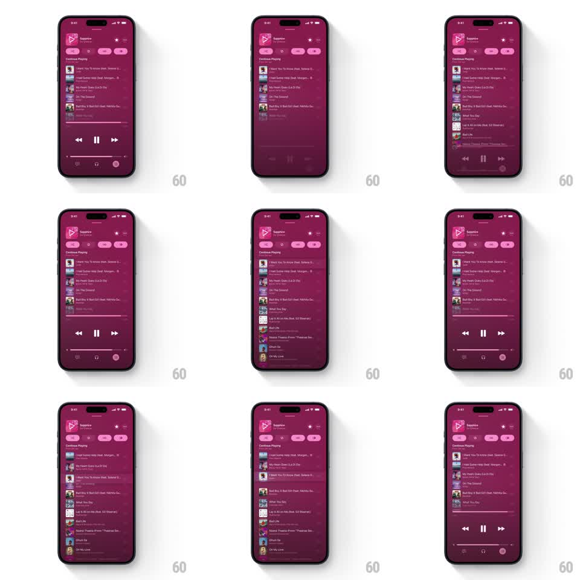

Media
Frame-by-frame

Rebuild this interaction 1:1: Apple Music's scroll-coupled mini player - as the track list scrolls up, the now-playing bar sheds its controls and slims to a thin strip, and scrolling back down expands it again.

Rebuild this interaction 1:1: Apple Music's scroll-coupled mini player - as the track list scrolls up, the now-playing bar sheds its controls and slims to a thin strip, and scrolling back down expands it again.
## Integration
Integration: stack-agnostic spec - springs given as stiffness/damping, timed motions as duration + curve; map every value to your framework and animation library of choice.
## Scene
Dark magenta playlist screen ("Sapphire", Ed Sheeran) with action chips and a "Continue Playing" track list; a now-playing bar pinned above the tab bar with artwork thumbnail, track title, and skip-back / pause / skip-forward controls.
## Motion spec
Pattern: scroll-direction-driven collapse of a pinned playback bar.
- Scrolling up (content away): controls fade and slide outward (150ms, skip buttons drift +/-12px, pause scales 0.9) while the bar's height shrinks ~40% (height animation follows scroll offset 1:1 up to its cap), the artwork thumbnail shrinks and docks left, and the progress hairline appears along the bar's top edge.
- Scrolling down: everything reverses on the same 1:1 coupling - controls fade back in, bar regrows, thumbnail returns to full size.
- The title marquee keeps scrolling throughout, independent of the collapse.
- The collapse never fully hides the bar - a slim playing strip with artwork and progress always remains.
## Calibration
- Coupling is 1:1 with scroll offset over ~120px of travel; beyond that the bar rests in its collapsed state.
- The progress hairline only exists in the collapsed state - it fades as controls return.
## Reduced motion
Bar height animates in two discrete states (150ms crossfade) on scroll-direction change instead of continuous coupling.
## Don't miss
- Controls leave by sliding away from center, not just fading - the pause button collapses toward the artwork.
- The tab bar beneath never moves; only the player bar morphs.